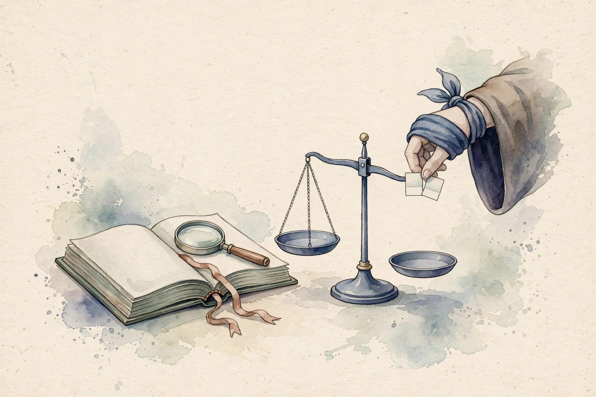
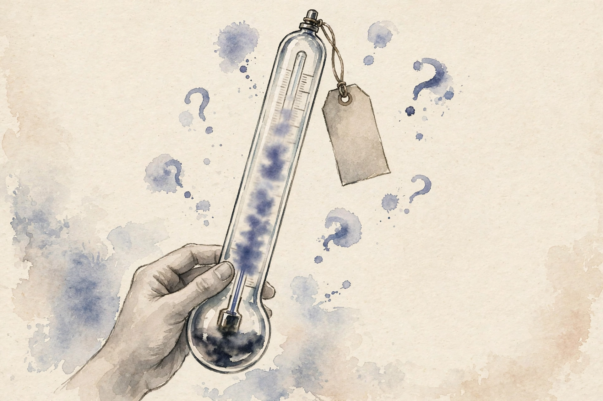

Unit 08 · LLM evaluation and judging
Twelve concepts keep evaluation honest: judge rubrics, pointwise and pairwise judging, position and verbosity bias, calibration, nondeterminism, human checks, blind evaluation, contamination, appropriate metrics, uncertainty, cost and latency, and benchmark interpretation. Every number below comes from the lesson.
How to read this page. Three tags separate fact from invention.
From the lesson A claim, number, or figure that appears in the lesson source, with its section cited.
Illustration Invented by the companion: an analogy, a toy with values you supply, or a what-if. Never lesson content.
Companion Editorial framing or a transferable principle. The lesson did not say it this way.

From the lessonC01 items 2-6
A bare which-answer-is-better prompt gets shrugs from the judge. What fixes it? The toy rubric: correctness (does it solve the task), completeness (no missing steps), clarity (a reader can follow). Each scored 1-5 with one anchor example per level. The rubric is the law, the judge is the court. Vague law gives arbitrary verdicts. Each criterion needs a definition and an anchor, or the judge invents its own. The design rule: one criterion per valued property, anchors from real examples, pilot on 50 items, revise where judges disagree.
From the lessonC01 items 6, 11
The computed example: vague rubric, inter-judge agreement 0.58. Anchored rubric, agreement 0.81. The anchors bought 0.23 of agreement. Figure u08_fig01 shows the before and after. The check: two judge runs on 50 items agree above 0.75. Below that, the rubric is vague or the task is subjective. The broken assumption: criteria cover user value. The rubric that scores style while users care about correctness must be validated against human preference first.
From the lessonC02 items 2-6
Is 7/10 or A beats B the better verdict? The toy: pointwise gives A 7, B 6, but the judge's 7 means different things on different days. Pairwise asks directly, A wins 62 of 100. The comparison is the stabler signal. Pointwise is a ruler, pairwise is a scale. Rulers need calibration, scales just compare. The cost: n models need n(n-1)/2 pairs for a full round robin, O(n^2), versus n scores pointwise. The computed example: 4 models, 6 pairs, 100 items each. Bradley-Terry scores (mean-centered MLE): A 0.41, B 0.20, C -0.09, D -0.51. Ranking is stable across seeds.
From the lessonC02 items 8-9, 11
The check: win rates sum sensibly, w_AB + w_BA = 1 with ties handled. Cycles (A>B>C>A) get flagged, not hidden. The price: 10 models and 500 items mean 22,500 judge calls. Budget accordingly. The broken assumption: transitivity. Rock-paper-scissors model strengths make the ranking meaningless. Report cycles, do not average them away. The lab asks: 5 models need 10 pairs. w_AB = 0.62 with w_BA = 0.30 leaves 0.08 ties.
From the lessonC03 items 2-6
A beats B 70% when A is first, but only 45% when B is first. Which number is true? The toy: debiased estimate = (0.70 + (1 - 0.45)) / 2 = 0.625. The swap averages out the position effect. The judge is a tired reader. It likes what it sees first and what fills the page. Present each pair twice, both orders. True preference p, position bias b toward first: observed p + b and (1 - p) + b. The mean of (obs1, 1 - obs2) equals p. The algebra cancels b. Swapping doubles judge calls, halves the bias.
From the lessonC03 items 6, 11
The computed example: A-first 0.70, B-first A wins 0.45, debiased 0.625. Verbosity: +200 tokens buys +0.08 win rate with no quality change. Length caps tame it. Figure u08_fig02. The check: the two orders disagree by less than 0.1 on most pairs. Large gaps flag strong position bias. The broken assumption: symmetric bias. The judge that favors first AND longer, with longer correlating with second, needs length controlled before swapping.
From the lessonC03 items 5, 7 Swap bench: the lesson's debiasing algebra.
Reproduce the lesson: 0.70 and 0.45 give 0.625.
From the lessonC04 items 2-6
The judge says 90% confident and is right 78% of the time. Do you trust the 90? The toy bins: confidence 0.9, accuracy 0.78. The judge is overconfident, discount its certainty. Calibration is honesty about doubt. A calibrated judge's 70% comes true 70% of the time. An overconfident judge's 90% is a boast. ECE = sum over bins of (fraction in bin) times |accuracy - confidence|. It is a weighted honesty gap.
From the lessonC04 items 6, 11
The computed example: 5 bins, accuracies [0.55, 0.62, 0.68, 0.75, 0.78] at confidences [0.55, 0.65, 0.75, 0.85, 0.95]. ECE = 0.074. The top bin is the liar. Figure u08_fig03. The fix: fit a recalibration mapping on a held-out set, and check ECE on a fresh set. The broken assumption: calibration transfers. The judge calibrated on math is wild on poetry. Recalibrate per domain. The lab asks: bin conf 0.85, acc 0.75, weight 0.2, contribution 0.02.
From the lessonC04 items 5, 7 ECE bench: the weighted honesty gap on your bins.
Reproduce the lesson: equal-weighted bins give 0.074. Try the lab: one bin, conf 0.85, acc 0.75, weight 0.2, gives 0.02.
From the lessonC05 items 2-6
The eval says 0.72 on Monday and 0.69 on Friday. Did the model change? The toy: temperature 0.7, two runs, 3 of 100 verdicts flip. The model did not change, the sampler did. The judge is a die that remembers its last roll. Sampling temperature, batching, and backend updates all shake it. The protocol: temperature 0 for judging, fixed seed, pinned model version, log all three. Measure run-to-run agreement on 100 items before trusting a delta.
From the lessonC05 items 6, 11
The computed example: temp 0, agreement 0.97 across 2 runs. Temp 0.7, agreement 0.88. A 0.03 metric delta is noise at temp 0.7, signal at temp 0. The broken assumption: temp 0 is deterministic. Batched inference with nondeterministic kernels still jitters. Verify, do not assume. The lab asks: agreement 0.88, delta 0.03. Noise.
From the lessonC06 items 2-6
The judge says the new model wins. Do you ship on its word alone? The toy: 1000 pairs judged by model, 100 sampled for humans. Humans agree on 78. The 22 disagreements are the audit report. The judge is an intern, humans are the partners. The intern does the volume, the partners spot check. No partner review, no signature. Three gates: rubric validation (humans approve the rubric), spot checks (humans re-judge a sample), disagreement review (humans read every systematic disagreement class).
From the lessonC06 items 6, 11
The computed example: model win rate 0.62, human sample win rate 0.58, agreement 0.78. The 0.04 gap is within the Wilson band (n=100), ship with the caveat logged. The check: agreement above 0.75 and no systematic disagreement class above 10% of the sample. The broken assumption: the sample represents the set. The sample that misses the long-tail task where the judge is worst must be stratified by task type. The lab asks: agreement 0.78. Ship.
From the lessonC07 items 2-6
The judge gives your house model higher scores. Is it better or just familiar? The toy: blinded, house wins 0.52. Unblinded, house wins 0.61. The 0.09 is self-preference, not skill. Blinding is a blindfold on the judge. No names, no styles, no tells. Strip names, shuffle order, normalize formatting. Measure the blind vs unblind gap on a calibration set. The gap is the bias you removed.
From the lessonC07 items 6, 11
The computed example: blind 0.52, unblind 0.61, gap 0.09. After style normalization, unblind 0.55, gap 0.03. Formatting was half the tell. The check: a classifier cannot guess the model from the anonymized text above chance. If it can, the blindfold leaks. The broken assumption: the blindfold holds. The model that says the telltale phrase unblinds itself. Scrub known tells.
From the lessonC08 items 2-6
The model aces the benchmark. Did it learn or did it memorize? The toy: perplexity on benchmark items 8.2, on fresh paraphrases 24.6. The 3x gap smells like memorization. Contamination is an open book passed off as a closed exam. The score measures the leak, not the learning. Quarantine the test set like a crime scene. Three signals: perplexity far lower on benchmark than on paraphrases, verbatim n-gram matches with training data, canary strings (planted unique tokens) appearing in outputs.
From the lessonC08 items 6, 11
The computed example: benchmark ppl 8.2, paraphrase ppl 24.6, gap 3.0x. Clean model: 18.4 vs 21.2, gap 1.15x. Figure u08_fig04. The check: gap below 1.3x on a known-clean model. Above 2x, investigate before publishing the score. The broken assumption: paraphrases are fresh. The paraphraser trained on the same data leaks too. Generate fresh items from scratch. Canaries are free, plant them early.

From the lessonC08 items 4, 7 Contamination bench: the gap ratio on your perplexities.
Reproduce the lesson: 8.2 and 24.6 give 3.0x. Try the clean model: 18.4 and 21.2 give 1.15x.
From the lessonC09 items 2-6
BLEU says the summary is bad, humans love it. Who is wrong? The toy: the metric counts n-gram overlap, the human reads meaning. The metric is wrong for the task, change the metric. Metrics are shoes, tasks are feet. Exact match fits short answers, judges fit open generation, task success fits agents. The ladder: exact match, overlap, model judge, human, task outcome. Higher rungs cost more, so pick the cheapest rung that decides the question. The selection rule: the metric must vary with what you change and be blind to what you do not.
From the lessonC09 items 6, 11
The computed example: metric A correlates 0.91 with human ranks, metric B 0.43. Ship A. Cost: A needs a judge call per item, B is free. The 0.48 correlation gap justifies the cost. Validate each metric against human judgment on 100 items before adopting it, and adopt if the correlation is above 0.8. The check: the metric moves when the model improves on human review. A metric that never moves is decoration. The broken assumption: correlation transfers. The metric that correlates on easy items can fail on hard ones. Validate across difficulty bands. Figure u08_fig05 carries the ladder.
From the lessonC10 items 2-6
Win rate 0.62 on 100 items. Is that better than 0.55? The toy: Wilson [0.522, 0.709] vs [0.452, 0.644]. The bands overlap, the verdict is not sure, not A wins. A point estimate is a photo, an interval is a photo with the blur marked. Report the blur or the photo lies by omission. Width shrinks as 1/sqrt(n): four times the items halves the band. The computed example: n = 100, w = 62 gives [0.522, 0.709]. n = 400, w = 248 gives [0.572, 0.666]. Same rate, half the band.
From the lessonC10 items 5, 11
Honesty note, from the lesson itself: an earlier revision taught p +/- 1.96 sqrt(p(1-p)/n) as the Wilson interval. That formula is the Wald interval, misnamed. The lesson, runner, and cheatsheet now use the true Wilson score interval. The broken assumption: independence. 100 items from 5 prompts have effective n near 5. Cluster your items. The lab asks: n = 100, w = 62. The interval is [0.522, 0.709].
From the lessonC10 items 5, 7 Wilson bench: the true score interval on your counts.
Reproduce the lesson: 62 of 100 gives [0.522, 0.709]. Try 248 of 400 for [0.572, 0.666].
From the lessonC11 items 2-6
Full pairwise on 10 models costs how much? The toy: 45 pairs x 500 items = 22,500 judge calls. At $0.002 per call: $45. Doubled for swapped orders: $90. The bill is knowable before you run. Evals are a market. Price every design before you buy it. Bill = pairs x items x orders x price. Latency = calls / throughput. The computed example: 10 models, 500 items, swapped: 45,000 calls, $90 at $0.002. Sampled 100 items: $18, interval 2.2x wider. The tradeoff is explicit.
From the lessonC11 item 11
The broken assumption: price is stable. The provider doubles the price mid-quarter. Re-price before big runs. The check: actual spend within 10% of the bill. Overruns mean retries or price changes. The lab asks: 6 models, 200 items, swapped, $0.002. The bill is $12.
From the lessonC11 items 5, 7 Bill bench: the lesson's price model on your design.
Reproduce the lesson: 10 models, 500 items, 2 orders at $0.002 gives $90. Try the lab: 6 models, 200 items gives $12.
From the lessonC12 items 2-6
Model X scores 92 on the benchmark, model Y scores 91. Is X better? The toy: with n = 500 the band is +/- 0.024, the gap is noise. A benchmark is a thermometer. It reads temperature, not health. A broken thermometer reads whatever it wants. Five caveats: bands (C10), contamination (C08), saturation (everyone near 100), gaming (training to the test), construct validity (does it test the skill). Check all five before quoting a number.
From the lessonC12 items 6, 11
The computed example: 92 vs 91 on n = 500: bands [0.893, 0.941] and [0.882, 0.932], overlap. Verdict: tie. Saturation: 5 models above 0.90, the benchmark no longer separates them. The check: no naked scores in any report, every number carries its band and its contamination status. The broken assumption: the benchmark is clean. Half the items in the training set inverts the ranking on fresh items. Quarantine first.
Every lesson on this page, in order. Tap one to return to its chapter.